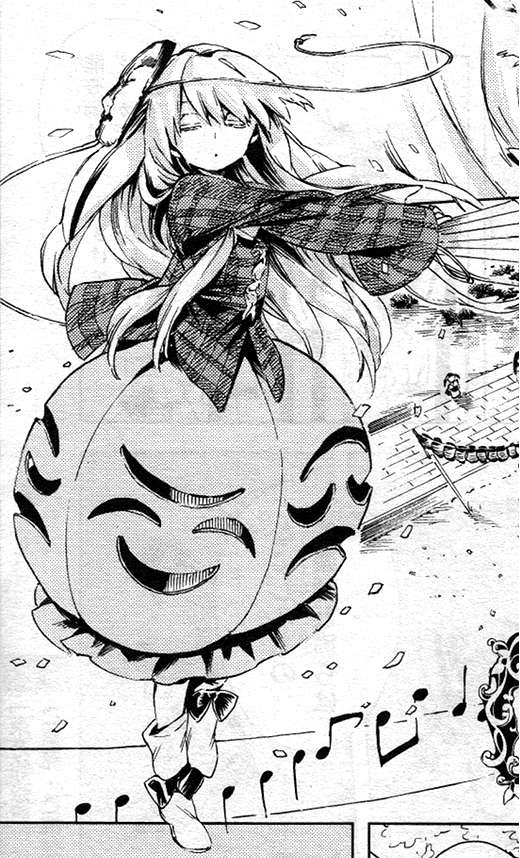

About this Shop
Kokoro's Mask Shop was made in 2014 at Gensokyo.
The shop was made after my love in masks and theatrical perfomance.
Since my birth,
I love expressing myself through my masks and I want
to offer a way for someone
who don't know how to share their expressions.
And after that, with Mamizou suggestion, I made this shop.
Thank you Mamizou for your help.
With love
Hata No Kokoro.
